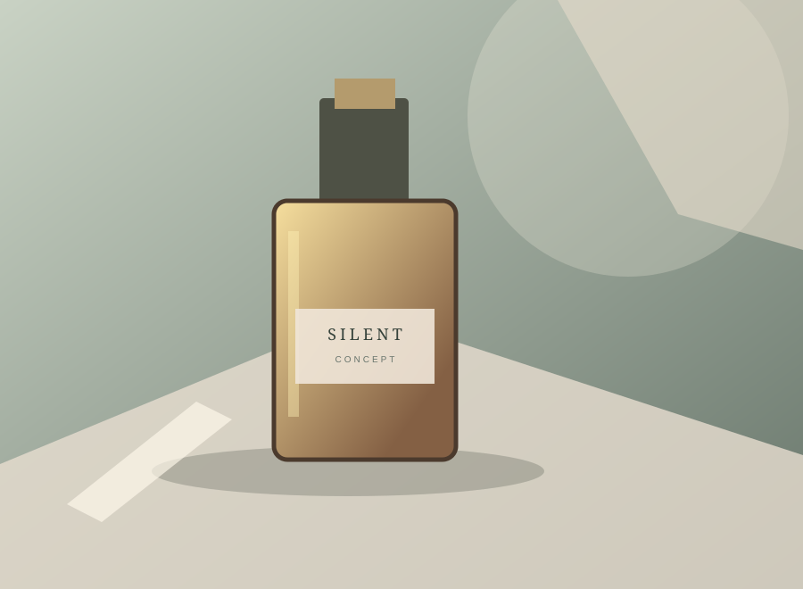

Concept Project · Cinematic Product Film
Project Title Placeholder
Video URL: to be added · Platform: optional
Replace this editable placeholder with the approved project title, short description, and video link. The image is a permitted original concept visual and does not represent a real client or case-study result.
Update this project: edit the first object in
script.js and replace the matching image in assets/. Add a YouTube, Instagram, or TikTok link only when the correct profile or video is available.